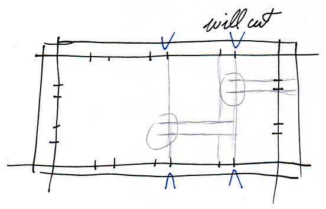
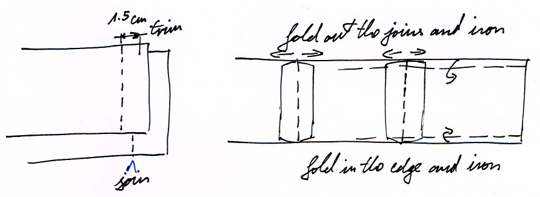
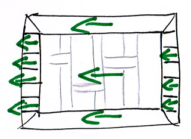

Sanghati Sewing Guide
Drawing and Cutting
Cut off the length of the cloth and iron it, so that the cloth lies smooth and flat.
Cut off 10cm longer on each side to allow for mistakes.
Fold up a short length, align the edges to be parallel, this will establish a 90 degree corner. Crease the corners of the fold to create a mark.

Fold out and use the creased marks to measure where the edge of the drawing is going to start.
Mark the bottom edge above the holes of the salvage on the edge. Use this as the bottom side of the drawing.
Identify the top and bottom side of the cloth. The top side is slightly more reflective, and the bottom is more matt. When a corner is folded over, the difference should be possible to tell when looking at the cloth at a low angle.

Draw the marks on the top side. (TOOD: confirm)
Mark the lenghts and draw the pattern.
On the khanda lines that you are intending to cut, carry the crossing line over a few centimeters to keep a mark of the positions after the cut.

After the lines are drawn, cut the edges around, and cut the dividing line of the khandas.
For the second layer, the already marked cloths can be placed over the blank cloth and the marks can be copied over easily.
The top and bottom side of the cloth have to be observed. The marks again have to be drawn on the top side of the second layer, but the first layer have to be flipped on the vertical axis when marking, to produce a mirror image.

Cutting the Borders
If there is space for it on the cloth, use the remaining part at the top for the long borders, and the side for the short borders. Cutting them this way preserves the thread alignment.

The thread has to be aligned in the same direction in the borders and the main cloth, otherwise during washing the border and main cloth will shrink at a different rate and produce wrinkles.
These are ready to iron and used later.
Fold and iron the edges by gently tapping with the iron. A strong force on the iron will push the edges out. 0.5 cm is sufficient along the edges.
After ironing, roll up the borders to preserve the ironed edges. Tie up the rolls with the trim from the edges.

When the borders have to be cut at a different orientation, sections of it have to be joined up to preserve the thread alignment.
The short borders sometimes have to be cut horizontally from the cloth. Cut the length to pieces which are the width of the border, and join them one after the other.


This will preserve the thread orientation when the border is be placed on the main cloth.

First Sewing
Start the first sewing from the broken lines (1).


Sew on the marked side. Start from a hand-span away from the kusi, lock the thread at the start with reverse sewing.
Sew towards the kusi, and stop at 2mm before the kusi line.
Move to the other side of the kusi, and continue the line. Lock the far edges by reverse sewing. The inner edge doesn't have to be locked, the second sewing will cross and lock it.
{kind=link}
Second Sewing
...